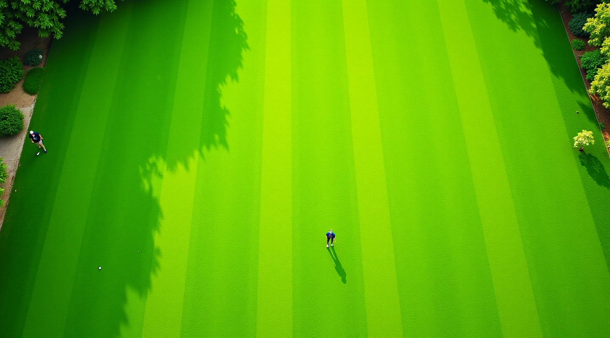

أخضر الملاعب للصيانة والتجهيز
متخصصون في تجهيز وصيانة ملاعب الكروكيه العشبية بأعلى المعايير المهنية منذ 2021

كيف بدأنا وأين نحن الآن
بدأت أخضر الملاعب برؤية واضحة — توفير خدمات تجهيز وصيانة احترافية لملاعب الكروكيه في مصر. لا نعتقد بالحلول السريعة أو السطحية. نركز على الجودة والتفاصيل الدقيقة.
البدايات الصحيحة: بدأنا برؤية بسيطة — نادي القاهرة الرياضي احتاج إلى ملعب كروكيه عالي المستوى. كان هناك تحديات كثيرة: اختيار الأرض المناسبة، تحليل التربة، نوع العشب الملائم للمناخ المصري. عملنا بحرص وأمانة على كل مرحلة.
النمو والخبرة: مع الوقت، اكتسبنا خبرة حقيقية في كل جوانب المشروع. لسنا مجرد منفذين — نحن نفهم الزراعة، الري، التسوية، المعدات المتخصصة. كل ملعب فريد والتحديات تختلف. تعلمنا كيفية التعامل مع كل حالة على حدة.
اليوم: نحن نعمل على مشاريع متعددة ونقدم استشارات لأندية وملاعب أخرى. ليس لدينا رقم سحري لعدد المشاريع — لكننا فخورون بأن كل مشروع يحصل على الاهتمام الذي يستحقه. الجودة دائماً قبل الكمية.
ماذا نفعل بالضبط
أخضر الملاعب تغطي كل مراحل المشروع — من البداية إلى الصيانة المستمرة. لا نترك تفاصيل بدون اهتمام.
تحليل وتحضير التربة
نبدأ بفحص التربة بدقة. نتحقق من مستويات الحموضة، الصرف، المعادن الأساسية. التربة الصحيحة هي أساس ملعب قوي.
اختيار وزراعة العشب
اختيار نوع العشب المناسب للمناخ والاستخدام. نزرع بتقنيات حديثة ونراقب النمو في المراحل الأولى.
أنظمة الري والصرف
ندرس احتياجات المياه وتصرف الرطوبة الزائدة. نصمم نظام ري فعال يحافظ على العشب دون هدر.
الصيانة والإصلاح
صيانة موسمية منتظمة، معالجة الأمراض والآفات، إصلاح الأضرار. الملعب يحتاج عناية مستمرة للبقاء في حالة ممتازة.
التسوية والتشطيب
ملعب الكروكيه يحتاج دقة عالية في التسوية. نستخدم معدات متخصصة لضمان سطح مستوٍ وآمن.
الاستشارات والتقييم
نساعد الأندية على تقييم أوضاع ملاعبهم الحالية وتطوير خطط تحسين واقعية.
ما نؤمن به فعلاً
لا نعتقد بالتعهدات الفارغة. نعمل بناءً على مبادئ واضحة تحكم كل ما نفعله.
الدقة أولاً
التفاصيل الصغيرة تحدث الفرق الكبير. نركز على كل مرحلة من مراحل العمل بدون عجلة.
الشفافية
نشرح ما نفعل ولماذا. لا توجد تكاليف مخفية أو مفاجآت غير سارة.
الابتكار العملي
نتابع التطورات الجديدة لكن لا نطبقها عشوائياً. نختبر ونتأكد قبل التطبيق.
الالتزام طويل الأمد
نحن شركاء في النجاح. بعد الانتهاء من المشروع نبقى متاحين للدعم والصيانة.
كيف نعمل مع كل مشروع
لا توجد نسخة واحدة تناسب الجميع. كل ملعب فريد وكل مشروع له متطلبات خاصة به. إليك كيفية عملنا:
التقييم والاستشارة
نزور الموقع ندرسه بعناية. نسأل أسئلة كثيرة: كيف يريدون استخدام الملعب؟ ما المناخ المتوقع؟ ما الميزانية والإطار الزمني؟
الدراسة والتخطيط
نحلل التربة والمياه والصرف. نرسم خطة تفصيلية تحدد كل خطوة قادمة. لا نبدأ العمل قبل الموافقة على الخطة.
التنفيذ المرحلي
نعمل بمراحل واضحة — التحضير، التسوية، نظام الري، الزراعة. كل مرحلة تتطلب متخصصين وأدوات صحيحة.
المراقبة والتطوير
بعد الانتهاء نراقب الملعب في الأسابيع والأشهر الأولى. نعدل ما يحتاج تعديل. نتعلم من كل مشروع ونحسن طرقنا.
الصيانة المستمرة
نقدم خطط صيانة موسمية منتظمة. الملعب يحتاج عناية دورية للبقاء في أفضل حالة. نحن متاحون دائماً للدعم والإصلاحات.
معلومة مهمة
المعلومات المقدمة على هذا الموقع مخصصة لأغراض تعليمية وإعلامية. تجهيز وصيانة ملاعب الكروكيه يتطلب خبرة متخصصة وتقييماً لكل حالة على حدة. تختلف النتائج بناءً على عوامل عديدة منها حالة التربة، المناخ، نوع العشب المختار، وجودة الصيانة. نحن نلتزم بتقديم أفضل الخدمات بناءً على معاييرنا المهنية. للاستشارة الشخصية والحصول على تقييم دقيق لموقعك، يرجى التواصل معنا مباشرة.